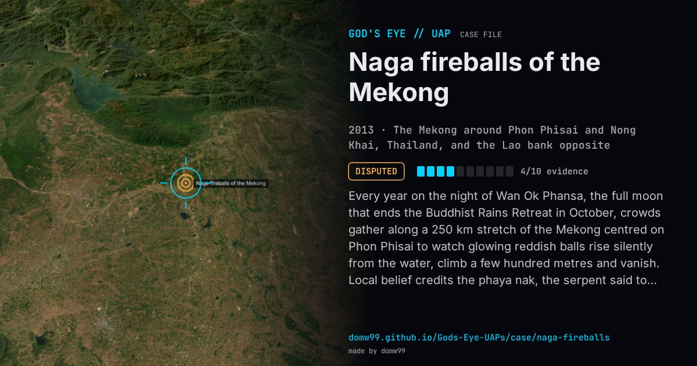

Naga fireballs of the Mekong

Every year on the night of Wan Ok Phansa, the full moon that ends the Buddhist Rains Retreat in October, crowds gather along a 250 km stretch of the Mekong centred on Phon Phisai to watch glowing reddish balls rise silently from the water, climb a few hundred metres and vanish. Local belief credits the phaya nak, the serpent said to live in the river; until the mid-1980s they were called ghost lights, and the Phayanak festival now draws tens of thousands of visitors. The photograph here was taken near Nong Khai on Ok Phansa night, 2013. Sceptics point to gunfire and flares from the Lao bank, which the crowds would not hear across the river; believers point out that the lights also appear over ponds and smaller rivers away from the border.
Explanation
In 2002 a documentary on Thailand’s iTV filmed Lao soldiers on the far bank firing tracer rounds into the air during the festival, and the Thai biologist Jessada Denduangboripant, after studying footage, concluded the lights were flares fired from the other side. Neither explanation is accepted locally, and a Lao government inquiry in 2021, held during a COVID-19 curfew with police on the river, said it was “extremely unlikely” anyone could have fired unnoticed. The idea of phosphine or methane from the riverbed has no scientific support.
What was seen
Shape: Reddish-pink balls of light rising silently from the river to a few hundred metres
Witnesses: Tens of thousands of festival visitors each year
Duration: Seconds each; tens to thousands a night, on the night of Ok Phansa
Sources
Browse
- 2010s
- Disputed
- Recurring lights
- Many independent witnesses
- Photographs
- Video footage
- Lights and fireballs
- Spheres and orbs